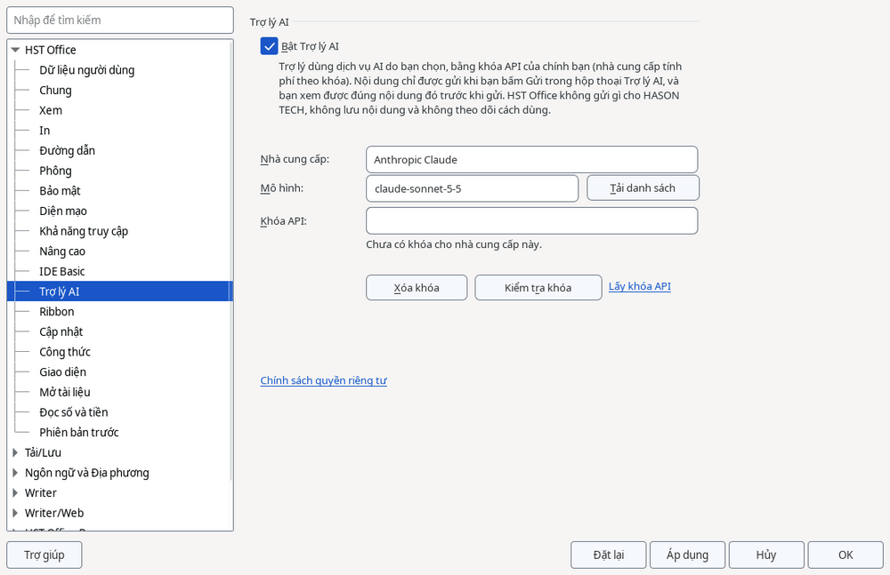
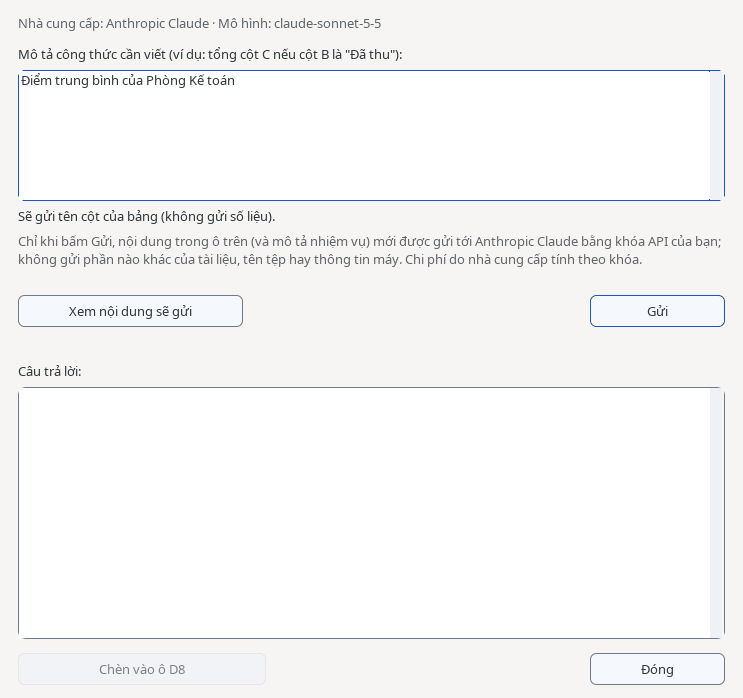

Công cụ HST
Trợ lý AI
Trợ lý AI giúp bạn soạn và sửa câu chữ, hỏi cách dùng HST Office và, trong bảng tính, viết hoặc giải thích công thức. Sử dụng API riêng của người dùng: bạn chọn nhà cung cấp (OpenAI, Google Gemini hoặc Anthropic Claude) và nhập khóa API của chính mình.
Tìm Trợ lý AI ở đâu?
- Thẻ , nhóm : , và (HST Writer, HST Sheets, HST Slides, HST Draw). HST Sheets có thêm và .
- Menu trên thanh trình đơn: , (HST Sheets), , , .
Khi Trợ lý AI chưa bật, các nút trong nhóm mờ đi, chỉ còn dùng được.
Bật và chọn nhà cung cấp
- Tạo khóa API ở trang của nhà cung cấp bạn chọn (cần tài khoản ở nhà cung cấp đó; chi phí do nhà cung cấp tính theo khóa).
- Chọn , hoặc bấm trên thẻ .
- Đánh dấu .
- Ở , chọn , hoặc . Ô điền sẵn một mô hình; bấm để xem các mô hình dùng được với khóa của bạn.
- Dán khóa vào ô . Nút mở trang tạo khóa của nhà cung cấp trong trình duyệt; gửi một câu hỏi ngắn để thử khóa và mô hình.
- Bấm .

Mỗi nhà cung cấp có khóa riêng; đổi nhà cung cấp thì nhập khóa của nhà cung cấp đó. Để trống ô thì giữ khóa đã lưu; xóa khóa đã lưu của nhà cung cấp đang chọn. Nếu bộ phận CNTT đã khóa một số cài đặt, trang này ghi rõ điều đó.
Khóa API được cất ở đâu?
Khóa API không được ghi vào tệp cài đặt. HST Office cất khóa trong kho mật khẩu của hệ điều hành: Windows Credential Manager, Chuỗi khóa (Keychain) của macOS hoặc kho khóa Secret Service trên Linux. Nếu máy không có kho này, khóa vào kho mật khẩu của HST Office khi bạn đã đặt mật khẩu chính; nếu không, khóa chỉ được giữ trong bộ nhớ đến khi đóng HST Office, và trang cài đặt báo điều đó.
Gửi gì, khi nào?
- Nội dung chỉ được gửi tới nhà cung cấp bạn chọn khi bạn bấm trong hộp thoại Trợ lý AI. Trợ lý không tự gửi gì ở chế độ nền.
- Bấm để xem trước đúng nội dung đó (kèm mô tả nhiệm vụ) trước khi gửi. Không gửi phần nào khác của tài liệu, tên tệp hay thông tin máy.
- và trong Tùy chọn chỉ liên lạc với nhà cung cấp khi bạn bấm, và không gửi nội dung tài liệu.
- HST Office không gửi gì cho HASON TECH, không lưu nội dung và không theo dõi cách dùng.
Hỗ trợ viết
- Chọn (bôi đen) đoạn văn cần xử lý, rồi bấm .
- Ở , chọn một việc: , , , , , , , hoặc (gõ yêu cầu của bạn).
- Văn bản lấy từ vùng chọn hiện trong hộp thoại; bạn sửa được trước khi gửi. Bấm .
- Đọc , rồi bấm hoặc . Thay đổi hoàn tác được bằng Ctrl+Z.
Hỏi cách dùng
Bấm , gõ câu hỏi, ví dụ “Làm sao đánh số trang từ trang 2?”, rồi bấm . Câu trả lời chỉ đường theo tên thẻ, nhóm và lệnh tiếng Việt trên thanh công cụ. Nếu trợ lý không chắc tên lệnh, hãy dùng Tìm tính năng (Alt+Q).
Viết và giải thích công thức trong bảng tính
Viết công thức từ mô tả
- Chọn ô cần đặt công thức, rồi bấm (menu: ).
- Mô tả bằng lời công thức cần viết, ví dụ “Điểm trung bình của Phòng Kế toán”. Trợ lý gửi kèm tên cột của bảng để viết đúng địa chỉ ô, không gửi số liệu.
- Bấm . Câu trả lời có công thức ở dòng đầu và lời giải thích ngắn.
- Bấm để ghi công thức vào ô đã chọn. Hãy kiểm tra kết quả trước khi dùng.

Giải thích công thức
Chọn ô có công thức, rồi bấm . Công thức của ô hiện sẵn trong hộp thoại; bấm để nhận lời giải thích: công thức tính gì, từng hàm và đối số, các lỗi có thể gặp và cách viết gọn hơn nếu có.
Khi trợ lý báo lỗi
- Chưa chọn nhà cung cấp hoặc chưa có khóa API: mở và làm theo phần Bật và chọn nhà cung cấp.
- Khóa API không hợp lệ, vượt hạn mức hoặc không tìm thấy mô hình: kiểm tra tài khoản ở nhà cung cấp, hoặc chọn mô hình khác bằng .
- Không kết nối được: kiểm tra mạng, tường lửa hoặc proxy. Mỗi yêu cầu chờ tối đa 2 phút.